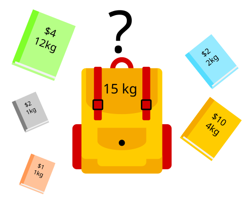
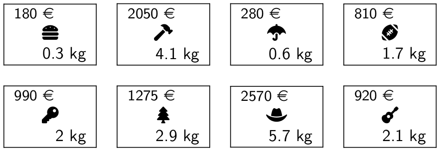
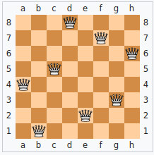
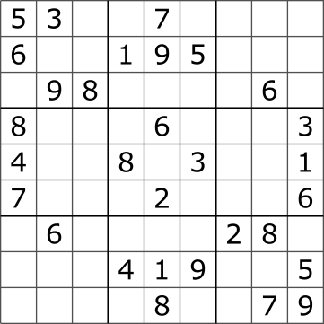
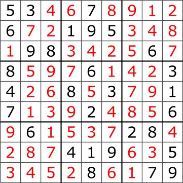
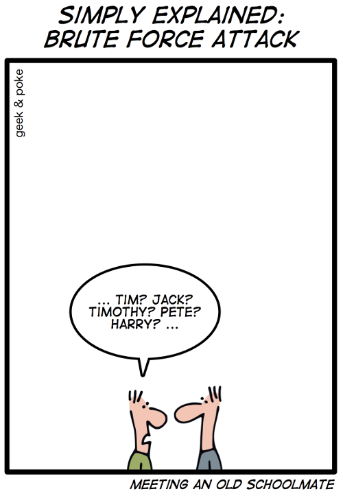

C13 Force brute, retour sur trace ¶
"When in doubt, use brute force."
Cours¶
Attention
Ce diaporama ne vous donne que quelques points de repères lors de vos révisions. Il devrait être complété par la relecture attentive de vos propres notes de cours et par une révision approfondie des exercices.
Travaux dirigés¶
Travaux pratiques¶
Note
Dans ce chapitre, on peut résoudre les problèmes proposés dans le langage de son choix.
 Exercice 1 : Problème du sac à dos par force brute¶
Exercice 1 : Problème du sac à dos par force brute¶
On dispose d’un sac à dos et d’une liste objet ayant chacun un poids et une valeur. Le problème du sac à dos consiste à remplir ce sac en maximisant la valeur des objets qu’il contient tout en respectant une contrainte sur le poids du sac. Dans l'exemple représenté ci-dessus (credit : wikipedia)

Le poids maximal du sac est de 15kg, la combinaison d'objet ne dépassant pas ce poids et de valeur maximale est celle constituée de tous les livres sauf le vert.
Le but de l'exercice est de tester sur cet exemple :
- l'approche par force brute,
- la stratégie gloutonne
Nous utiliserons un sac de poids maximal 8kg avec les objets suivants:

- Créer un type adapté permettant de représenter un objet. Dans la suite, on suppose que les \(n\) objets sont rangés dans un tableau de taille \(n\).
- On décide de représenter un choix d'objets par un tableau \(c\) de \(n\) booléens, tel que \(c_i\) vaut
truesi l'objet \(i\) fait partie du choix etfalsedans le cas contraire. Par exemple si \(n=5\) la combinaison{false, false, true, false, true}signifie qu'on a pris les objets 2 et 4. Ecrire une fonctionpoids_valeurqui prend en entrée un tableau d'objets et un tableau de booléens représentant un choix d'objets et qui renvoie le poids et la valeur de ce choix. - Avec \(n\) objets, combien de combinaisons faudra-t-il tester ? Justifier
-
Ecrire une fonction qui résoud le problème par force brute, vérifier votre réponse

-
Résoudre le problème avec un sac de poids maximal 67 et la liste de 24 objets suivantes :
7.8,3897 3.8,1953 7.9,3871 9.1,4598 1.4,602 5.6,2730 8.7,4283 5.5,2668 7.7,3895 6.9,3512 8.7,4318 8.9,4355 7.3,3660 2.9,1574 5.3,2548 0.5,142 0.8,430 0.6,398 3.8,1776 8.2,4073 8.8,4507 5.7,2932 1.0,599 7.8,3802Tester votre réponse :
Note
Vous pouvez créer un fichier texte représentant la liste des objets et le faire lire par votre programme, c'est une excellente occasion de revoir la lecture de fichier !
-
Mesurer le temps d'exécution de votre programme avec la commande
timedes sytèmes Linux (ou directement avec le moduletime.hdu C ouSys.timeen OCaml) -
Prédire le temps d'exécution pour un problème avec 50 objets résolu par force brute.
-
Pour ce problème, la stratégie gloutonne consiste à classer les objets un utilisant un critère pertinent, par exemple le rapport
valeur/poidsde l'objet puis à parcourir la liste ordonnée des objets et à les prendre s'ils rentrent encore dans le sac. Mettre en oeuvre cette stratégie et comparer les résultats obtenus avec ceux de la force brute, que peut-on en conclure sur la stratégie gloutonne sur cet exemple ?
Exercice 2 : Stratégie gloutonne pour le rendu de monnaie¶
On dispose d'un système monétaire c'est-à-dire d'un ensemble de valeurs possibles pour les pièces et les billets. Le problème du rendu de monnaie consiste à déterminer le nombre minimal de pièces à utiliser pour former une somme donnée. Par exemples :
- Si on se place dans le système monétaire des euros c'est à dire \(\{500, 200, 100, 50, 20, 10, 5, 2, 1\}\), alors
- pour former 17 euros le nombre minimal de pièces et de billets est \(3\) (\(10+5+2\))
- pour 38 euros, c'est \(5\) \((20+10+5+2+1)\)
- Si on place dans le système monétaire \(\{5, 4, 3, 1\}\) alors
- pour former 19 le nombre minimal est de \(4\) (\(5+5+5+4\))
- pour former 7 le nombre minimal est de \(2\) (\(4+3\))
Le but de l'exercice est d'implémenter et de tester une stratégie gloutonne sur ce problème.
-
Implémenter la stratégie gloutonne qui consiste à rendre la pièce de plus forte valeur possible à chaque étape
-
Tester sur les exemples donnés en introduction, que peut-on en déduire ?
Note
- On montre que si le système monétaire possède certaines propriétés alors l'algorithme glouton est optimal (le système monétaire est alors dit canonique), c'est le cas des euros (voir la page wikipedia) pour plus de détails.
- De même que pour le problème du sac à dos, la programmation dynamique fournira une solution efficace à ce problème.
Exercice 3 : Retour sur le problème des n reines¶
On rappelle (voir cours) que le problème des \(n\) reines consiste à placer \(n\) reines sur un échiquier de taille \(n \times n\) sans qu'aucune reine n'en menace une autre (c'est-à-dire que deux reines ne se trouvent pas sur la même ligne, colonne ou diagonale.)
Comme chaque reine est nécessairement sur une colonne différente, on représentera une position par un tableau tab de taille \(n\) tel que tab[i] contient le numéro de colonne de la reine i (numéroté à partir de 0) ou -1 si la reine n'est pas encore placée. Par exemple, pour \(n=8\), l'échiquier ci-dessous (credit wikipedia), correspond au tableau : [3, 0, 4, 7, 2, 6, 2, 5]

-
Résolution par retour sur trace en OCaml
Dans toute la suite on supposera définie une variable globalesizecontenant la taille \(n\) de l'échiquier.a. Ecrire une fonction
menaceint array -> int -> bool, qui prend en argument un tableau de taillesizeet un indiceidxet qui renvoie un boolén indiquant si la reine située en colonneidxest en prise avec une des reines situées aux colonnes0 ... idx-1.b. Ecrire une fonction qui calcule le nombre de solutions au problèmes des
nreines.Aide
On pourra écrire une fonction qui renvoie
unitet qui incrémente un compteurnb_soldéfini en variable globale dans le programmelet nb_sol = ref 0;;c. Déterminer le nombre de solutions dans le cas \(n=14\)
Vérifier votre réponse :
-
Par force brute
On peut aussi utiliser la force brute pour résoudre ce problème, au lieu de valider des solutions partielles de façon incrémentale comme dans le retour sur trace, on génère les solutions complètes puis on les teste une à une. Une solution est forcément une permutation de \(0, \dots n-1\) car toutes les reines sont sur des lignes différentes et on peut se contenter de vérifier les diagonales pour valider une solution car par construction les reines sont déjà sur des lignes et colonnes différentes.a. Afin de générer les permutations possibles de \(0, \dots n-1\), on propose d'utiliser l'algorithme de Heap.
b. En déduire une résolution par force brute.
Exercice 4 : Résolution d'un sudoku par retour sur trace¶
Le sudoku est un célèbre jeu de réflexion dans lequel on doit placer les chiffres de 1 à 9 dans une grille de façon à ce qu'une ligne, une colonne ou une sous grille de dimension 3x3 contienne un unique exemplaire de chacun des chiffres.
Voici un exemple de sudoku, ou les sous grilles (de taille 3x3) appelées blocs sont délimitées par des traits en gras (credits : Wikipedia,Tim Stellmach):

La solution est :

On représente une grille de sudoku en linéarisant la grille de 9x9 dans un tableau à une seule dimension de 81 cases. On rappelle que la case d'indice \((i,j)\) dans la grille 9x9 correspond à la case \(9 \times i+j\) dans le tableau linéarisé. Et que la case d'indice \(k\) dans le tableau linéarisé correspond à la case d'indice \((q,r)\) ou \(q\) et \(r\) sont le quotient et le reste dans la division euclidienne de \(k\) par 9.
Le but de l'exercice est d'écrire un programme en C permettant de résoudre un sudoku par backtracking
-
Ecrire une fonction
meme_lignequi prend en argument un numéro de casen(entre 0 et 80) et renvoie un tableau contenant les numéros des 8 autres cases situés sur la même ligne que la casen. Par exemple, sin=42alors la fonction renvoie le tableau[36, 37, 38, 39, 40, 41, 43, 44] -
Ecrire une fonction
meme_colonnequi prend en argument un numéro de casen(entre 0 et 80) et renvoie un tableau contenant les numéros des 8 autres cases situés sur la même colonne que la casen. Par exemple, sin=42alors la fonction renvoie le tableau[6; 15; 24; 33; 51; 60; 69; 78] -
Ecrire une fonction
meme_blocqui prend en argument un numéro de casen(entre 0 et 80) et renvoie un tableau contenant les numéros des 8 autres cases situés dans le même bloc quen. Par exemple, sin=42alors la fonction renvoie le tableau[33; 34; 35; 43; 44; 51; 52; 53] -
Ecrire une fonction
verifiequi prend un argument un numéro de casencontenant un chiffrecet qui renvoiefalsesicest aussi la valeur d'une case située sur la même ligne, colonne ou bloc que la casen. Cette fonction permet donc de valider une solution partielle. -
Ecrire une fonction
resoudqui par backtracking, permet de résoudre un sudoku. -
Tester votre programme sur le sudoku donné en exemple
-
Le site de kaggle propose un fichier contenant un million de grilles de sudoku (le fichier fait 71 Mb) avec la solution. Sur chaque ligne du fichier, la grille est donnée sous la forme d'une chaine de caractères 81 caractères où
0indique une case vide puis on trouve (séparé par une virgule) la solution de la grille. Un court extrait de ce fichier contenant seulement les 1000 premières grilles est disponible ci-dessous :
Ecrire un programme permettant de lire une grille de sudoku à ce format. Tester votre programme sur ces 1000 grilles.
Exercice 5 : Le problème du cavalier¶
Le problème du cavalier consiste à partir d'une position de départ donnée à faire parcourir toutes les cases de l'échiquier à un cavalier, sans jamais repasser deux fois par la même case.
Dans le cas \(n=8\), voici un exemple de solution en démarrant du coin supérieure gauche (marqué 1) puis en se déplaçant vers la case marquée 2 puis 3, puis 4, ...
1 12 9 6 3 14 17 20
10 7 2 13 18 21 4 15
31 28 11 8 5 16 19 22
64 25 32 29 36 23 48 45
33 30 27 24 49 46 37 58
26 63 52 35 40 57 44 47
53 34 61 50 55 42 59 38
62 51 54 41 60 39 56 43
Résoudre ce problème par backtracking en langage C.
Aide
En notant SIZE la taille de l'échiquier, on pourra représenter une solution comme celle ci-dessus par le type structuré
struct solution
{
int lig_start;
int col_start;
int path[SIZE][SIZE];
int pathlen;
};
typedef struct solution solution;
La solution est partielle tant que pathlen est plus petit que SIZE*SIZE et on atteint une impossibilité lorsque toutes les destinations possibles du cavalier ont déjà été traversés ce qui peut-être vérifié en examinant le tableau path en effet, path[i][j] contient un entier \(k >0\) si au \(k\)-ième mouvement le cavalier a atterit sur la case de coordonnées (i,j) sinon path[i][j]=0 (la case n'a pas encore été visité).
Exercice 6 : Cryptarithme¶
Un cryptarithme est un casse-tête mathématique dans lequel on doit attribuer un chiffre à chaque lettre de façon à rendre correcte une opération arithmétique, l'un des plus connus (Strand magazine 2024) est :
Dans cette exercice afin de simplifier, on considère que l'opération est une addition de deux termes et on donnera un cryptarithme sous la forme de trois chaines de caractères : le premier terme, le second terme et le résultat. Le cryptarithme ci-dessus est donc "SEND","MORE","MONEY". D'autres exemples plus compliqués peuvent faire intervenir plusieurs additions ou d'autres opérations.
Ecrire un programme permettant de résoudre un cryptarithme par retour sur trace.
Aide
Comme toujours pour une résolution par backtracking on devra commencer par écrire une fonction permettant de valider une solution partielle. c'est-à-dire une solution dans laquelle certaines lettres ont déjà des valeurs. On prendra garde à traiter le cas d'une retenue éventuelle. Ainsi pour chaque "colonne" de l'addition lorsque les lettres présentes sur la colonne ont déjà une valeur en notant \(c_1\) le chiffre de la première opérande, \(c_2\) le chiffre de la seconde opérante, \(c_r\) la retenue éventuelle (initialisée à 0) et \(r\) le chiffre du résultat on doit vérifier que \((c_1 + c_2 + c_r) \mod 10 = r\)
Exercice 7 : Somme maximale dans une matrice carrée¶
On considère une matrice carrée de taille \(n\times n\), \(M_{i,j}\) (\(0 \leqslant i \leqslant n-1\) et \(0 \leqslant j \leqslant n-1\)) à coefficients entiers et on s'intéresse aux chemins depuis la première valeur en haut à gauche (\(M_{0,0}\)) jusqu'à la dernière en bas et à droite (\(M_{n-1,n-1}\)) qui n'utilisent que les déplacements vers la droite (\(\rightarrow\)) ou vers le bas (\(\downarrow\)). Et on cherche à déterminer la somme obtenue si on se déplace avec une stratégie gloutonne. Par exemple, dans la matrice suivante :
\(\left(\begin{matrix} 1 & 3 & 2 & 4 \\ 5 & 6 & 1 & 2 \\ 7 & 8 & 9 & 1 \\ 4 & 2 & 3 & 5 \end{matrix}\right)\)
La stratégie gloutonne donnera le chemin suivant en rouge et une somme de 38.
\(\left(\begin{matrix} \textcolor{red}{1} & 3 & 2 & 4 \\ \textcolor{red}{5} & 6 & 1 & 2 \\ \textcolor{red}{7} & \textcolor{red}{8} & \textcolor{red}{9} & 1 \\ 4 & 2 & \textcolor{red}{3} & \textcolor{red}{5} \end{matrix}\right)\)
-
En donnant un exemple montrer que la stratégie gloutonne ne donne pas toujours la somme optimale.
-
Ecrire en OCaml, une fonction
gloutonqui renvoie la somme obtenue la stratégie gloutonne -
Tester votre fonction sur l'exemple suivant et vérifier votre résultat :
exemple = [| [|11; 19; 12; 2; 18; 18; 2; 9; 12; 17|]; [|17; 14; 12; 10; 7; 18; 12; 5; 11; 7|]; [| 4; 8; 2; 12; 2; 17; 16; 13; 1; 6|]; [|13; 8; 20; 10; 3; 12; 17; 12; 12; 9|]; [| 8; 3; 14; 17; 16; 10; 13; 10; 5; 20|]; [| 9; 13; 17; 9; 10; 1; 11; 19; 20; 19|]; [| 1; 6; 18; 15; 10; 2; 7; 9; 4; 20|]; [| 3; 8; 17; 18; 20; 19; 16; 8; 2; 14|]; [|19; 17; 18; 9; 20; 15; 6; 5; 16; 3|]; [|13; 14; 14; 9; 16; 8; 17; 15; 9; 11|]; |] -
Un chemin valide dans une matrice de taille \(n\times n\) est de longueur \(2n-2\) et est nécessairement constitué de \(n-1\) directions bas et de \(n-1\) directions droite. Donc, choisir un chemin c'est choisir l'emplacement des directions droites, par conséquent, énumérer les chemins revient à énumérer les combinaisons possibles de \(n-1\) éléments choisis parmi les entiers de \(0\) à \(2n-3\). Ecrire une fonction
combinaisons : int -> int -> int list listqui prend en argument deux entiersketnet renvoie les combinaisons dekentiers choisis parmis les entiers de0àn-1.Aide
- on pourra commencer par écrire une fonction
entiers nqui renvoie la liste des entiers de0àn-1 - pour générer les combinaisons, on pourra penser récursivement et considérer que choisir
kéléments parminrevient soit à prendrenet donc ensuite à en choisirk-1éléments parmin-1soit à ne pas prendrenet donc à choisirkéléments parmin-1.
- on pourra commencer par écrire une fonction
-
Ecrire une fonction qui prend en argument un chemin (donné sous la forme des indices des emplacements de l'une des deux directions) et renvoie la valeur de ce chemin
-
Résoudre le problème par force brute et donner la valeur maximale de la somme dans l'exemple ci-dessus. Vérifier votre résultat :
.
Humour d'informaticien¶
